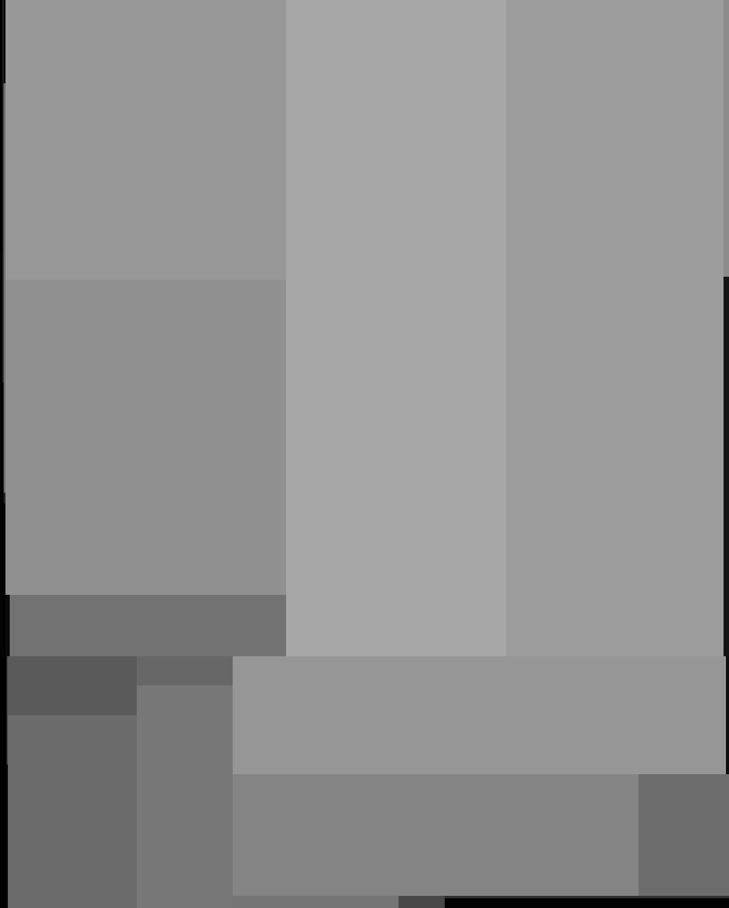
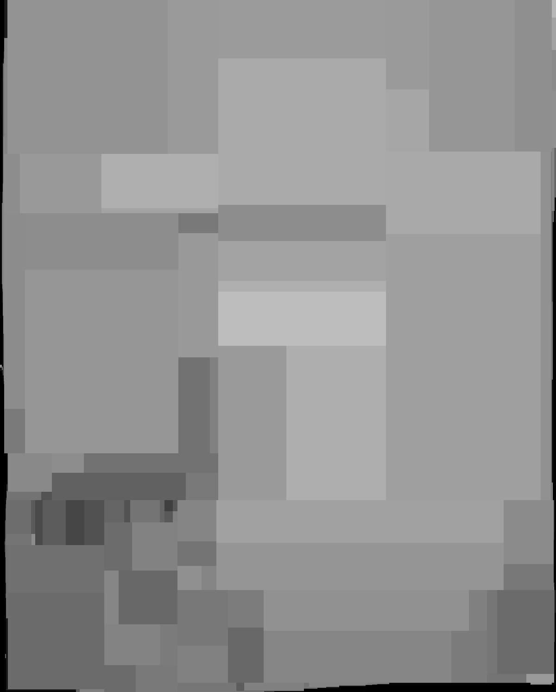
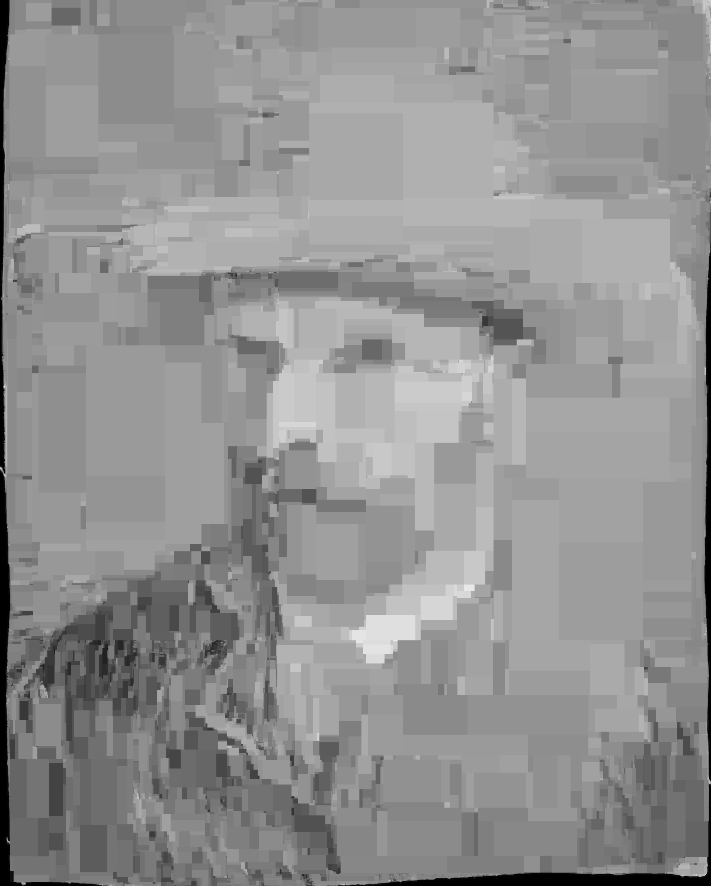
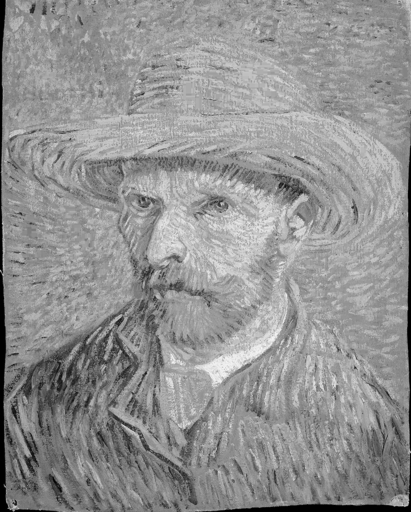
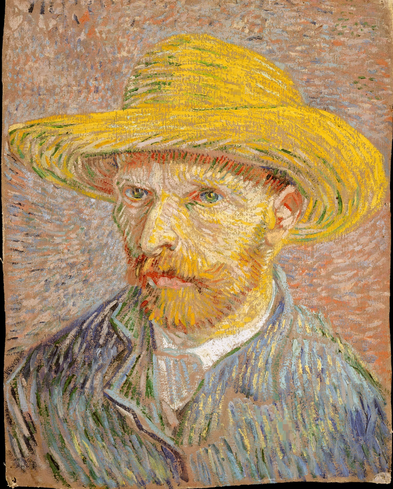
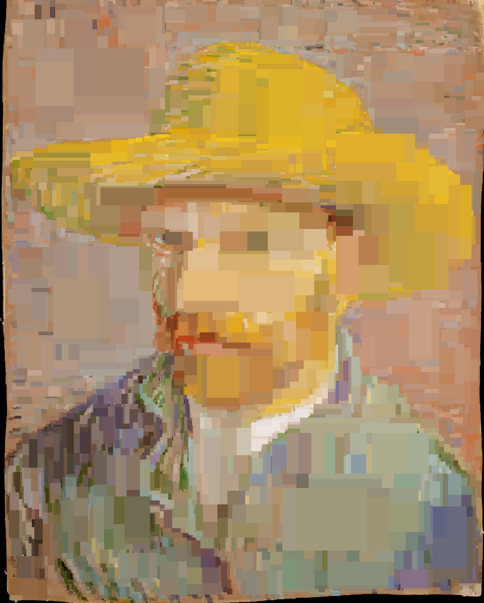
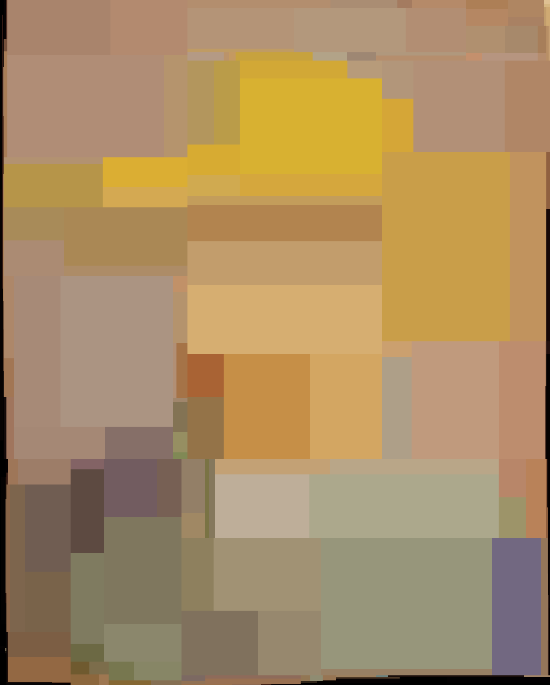
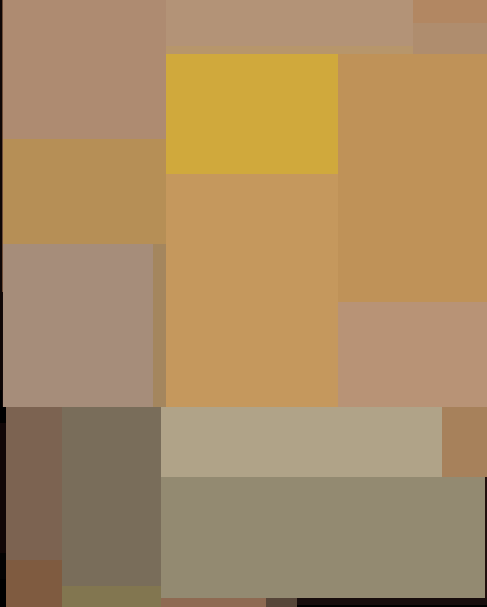

import pathlib
import warnings
import cv2
import numpy as np
from IPython.display import Markdown, display
from joblib import Memory, dump, load
from PIL import Image, ImageDraw, ImageFont, ImageSequence
from sklearn import tree
from sklearn.tree import DecisionTreeRegressor
warnings.simplefilter(action="ignore", category=FutureWarning)Using a Decision Tree to Compress an Image
   
   


Import Libraries
Define Constants
# For the final gif
left_pad = 80
upper_pad = 40
lower_pad = 100
model_results = {}
color_models = ["bw", "rgb", "hsv"]
font = ImageFont.truetype("../font/Roboto-Regular.ttf", 250)
font_small = ImageFont.truetype("../font/Roboto-Regular.ttf", 100)
memory = Memory("cache_directory", verbose=0)
max_depths = range(1, 31)Functions
def process_image(data, color_model):
"""
Process an image and create a coordinate array and a representation of the image.
Parameters:
data (numpy.ndarray): The input image data.
color_model (str): The color model of the image. Can be 'bw', 'rgb', or 'hsv'.
Returns:
numpy.ndarray: The coordinate array for the image.
numpy.ndarray: The representation of the image.
"""
if color_model not in ["bw", "rgb", "hsv"]:
raise ValueError("color_model must be 'bw', 'rgb', or 'hsv'")
if color_model == "bw":
# Convert the image to grayscale
data_bw = cv2.cvtColor(data, cv2.COLOR_RGB2GRAY)
# Get the dimensions of the image
rows_bw, cols_bw = data_bw.shape
# Create a coordinate array for the image
X = np.array([(row, col) for row in range(rows_bw) for col in range(cols_bw)])
# Reshape the data array into a column vector
y = data_bw.reshape(-1, 1)
elif color_model == "hsv":
# Convert the image to HSV
data_hsv = cv2.cvtColor(data, cv2.COLOR_RGB2HSV)
# Get the dimensions of the image
rows_hsv, cols_hsv, bands_hsv = data_hsv.shape
# Create a coordinate array for the image
X = np.array([(row, col) for row in range(rows_hsv) for col in range(cols_hsv)])
# Extract hue, saturation, and value
hue, sat, val = cv2.split(data_hsv)
hue = hue / 179.0 * np.pi * 2.0 # Convert hue to radians
# Create two-dimensional representation of hue and saturation
hue_x = np.cos(hue).reshape(-1, 1)
hue_y = np.sin(hue).reshape(-1, 1)
sat = sat.reshape(-1, 1)
val = val.reshape(-1, 1)
# Stack hue_x, hue_y, sat, and val to create y_hsv
y = np.hstack((hue_x, hue_y, sat, val))
elif color_model == "rgb":
# Create coordinate arrays using mgrid
row_coords, col_coords, band_coords = np.mgrid[
: data.shape[0], : data.shape[1], : data.shape[2]
]
# Reshape the coordinate arrays into a single array
X = np.column_stack(
(row_coords.ravel(), col_coords.ravel(), band_coords.ravel())
)
# Reshape the data array into a column vector
y = data.reshape(-1, 1)
return X, y
@memory.cache
def create_regressor_and_image(X, y, data, max_depth, color_model):
"""
Create a Decision Tree Regressor, fit it to the data, make predictions, and convert the predictions to an image.
Parameters:
X (numpy.ndarray): The input features for the regressor.
y (numpy.ndarray): The target output for the regressor.
data (numpy.ndarray): The original image data used to reshape the predicted array.
max_depth (int): The maximum depth of the tree.
color_model (str): The color model of the image. Can be 'bw', 'rgb', or 'hsv'.
Returns:
DecisionTreeRegressor: The fitted regressor.
PIL.Image.Image: The image created from the predictions.
"""
# Check that the color model is one of the expected values
if color_model not in ["bw", "rgb", "hsv"]:
raise ValueError("color_model must be 'bw', 'rgb', or 'hsv'")
# Create the regressor
regressor = DecisionTreeRegressor(max_depth=max_depth)
# Fit the regressor to the data
regressor.fit(X, y)
# Make predictions
y_pred = regressor.predict(X)
if color_model == "bw":
# Reshape the predictions to the original image shape
y_pred_reshaped = y_pred.reshape(data.shape[0], data.shape[1])
# Stack the reshaped predictions to create a 3-channel image
y_pred = np.stack((y_pred_reshaped,) * 3, axis=-1)
elif color_model == "hsv":
y_pred = y_pred.astype(np.float32)
# Convert the predictions to HSV format
y_pred_hue = (
np.arctan2(y_pred[:, 1], y_pred[:, 0]) % (2 * np.pi) / (2 * np.pi) * 179.0
).astype(np.uint8) # Convert hue to degrees
y_pred_sat = y_pred[:, 2].astype(np.uint8)
y_pred_val = y_pred[:, 3].astype(np.uint8)
y_pred = cv2.merge((y_pred_hue, y_pred_sat, y_pred_val))
# Convert to RGB format
y_pred = cv2.cvtColor(y_pred, cv2.COLOR_HSV2RGB)
# Reshape the predictions to the original image shape and convert to an image
image = Image.fromarray(y_pred.reshape(data.shape).astype(np.uint8))
return regressor, image
def convert_to_bw_image(data):
"""
Convert an image to black and white.
Parameters:
data (numpy.ndarray): The input image data.
Returns:
PIL.Image.Image: The black and white image.
"""
# Convert the image to grayscale
data_bw = cv2.cvtColor(data, cv2.COLOR_RGB2GRAY)
# Convert the grayscale array to an image
bw_image = Image.fromarray(data_bw.astype(np.uint8))
return bw_image
def create_animated_gif(
model_results,
max_depths,
color_model,
font,
font_small,
left_pad,
upper_pad,
lower_pad,
):
# List to store the concatenated images
concat_images = []
for max_depth in max_depths:
img = model_results[color_model][max_depth]["image"]
# create draw object
draw = ImageDraw.Draw(img)
# Define text and font
text_depth = f"max_depth = {max_depth:02d}"
text_label = color_model.upper()
# Get bounding box for text to calculate width and height
bbox = draw.textbbox((0, 0), text_depth, font=font_small)
width, height = bbox[2] - bbox[0], bbox[3] - bbox[1]
# Set position for the depth text to be centered
position_depth = ((width) // 2, img.height - height - lower_pad)
# Set positions for color model label
position_label = (left_pad, upper_pad)
# Draw the texts on the image
draw.text(position_label, text_label, fill="white", font=font)
draw.text(position_depth, text_depth, fill="white", font=font_small)
# Add concatenated image to the list
concat_images.append(img)
# Create animated gif
concat_images[0].save(
f"output_gifs/animated_{color_model}.gif",
save_all=True,
append_images=concat_images[1:],
loop=0,
duration=300,
)Load Data
data = np.asarray(Image.open("images/vangogh-original.jpg"))Create directories
directories = ["output_images", "output_gifs"]
for directory in directories:
pathlib.Path(directory).mkdir(parents=True, exist_ok=True)Convert to black and white
bw_image = convert_to_bw_image(data)
bw_image.save("output_images/vangogh-bw.jpg")Build the models
for color_model in color_models:
model_results[color_model] = {}
X, y = process_image(data, color_model)
for max_depth in max_depths:
model_results[color_model][max_depth] = {}
(
model_results[color_model][max_depth]["regressor"],
model_results[color_model][max_depth]["image"],
) = create_regressor_and_image(X, y, data, max_depth, color_model)
model_results[color_model][max_depth]["image"].save(
f"output_images/{color_model}_{max_depth}.png"
)Create animated gifs for each color model
for color_model in color_models:
create_animated_gif(
model_results,
max_depths,
color_model,
font,
font_small,
left_pad,
upper_pad,
lower_pad,
)